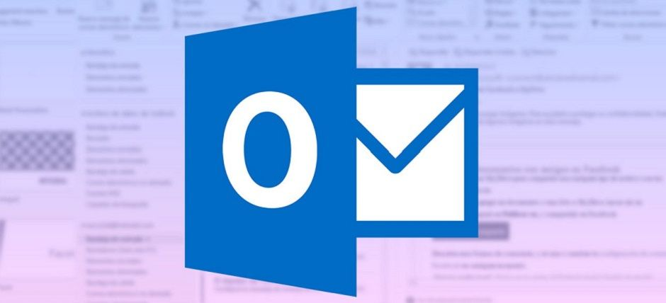

Que es Ofimatica
Se denomina ofimática al conjunto de medios y métodos aplicados a las actividades de oficina que posibilitan el procesamiento computarizado de información escrita, visual o sonora.
Así, el objetivo de la ofimática es proporcionar elementos que posibiliten la simplificación, mejora y automatización de la organización de las actividades de una compañía o grupo de personas (gestión de datos administrativos, sincronización de reuniones, etc.) Teniendo en cuenta que la organización de una empresa depende cada vez más de la comunicación, la ofimática ya no se limita a la toma de notas manuscritas, sino que comprende principalmente el intercambio de información, la gestión de documentos administrativos, el tratamiento de datos numéricos, la planificación de reuniones y la administración de cronogramas de trabajo.El término paquete ofimático hace referencia a todos los programas que permiten realizar las tareas que normalmente se llevan a cabo en una oficina. Un paquete ofimático incluye, por lo tanto, un procesador de texto, una hoja de cálculo, una herramienta de presentación, una base de datos, una agenda.

Excel

Si aún no conoces muy bien esta herramienta, aquí te explicamos qué es Microsoft Excel
Power Point

Si aún no conoces muy bien esta herramienta, aquí te explicamos qué es power point
Oficce

Si aún no conoces muy bien esta herramienta, aquí te explicamos qué es el programa office
Outlook
Si aún no conoces muy bien esta herramienta, aquí te explicamos qué es Microsoft Outlook
Asimismo, suite ofimática o paquete ofimático es la compilación o el conjunto de programas informáticos que son de uso frecuente en las oficinas con el fin de editar textos, realizar presentaciones, realizar cálculos, es decir, facilita el proceso y permite realizar un buen trabajo. En la actualidad, el paquete ofimático más dominante en el mercado es el de Microsoft Office que goza de sus propios formatos para cada uno de sus programas.
La ofimática se desarrolla en la década de los 70, en virtud de la evolución de los equipos electrónicos que comienzan a incluir microprocesadores, reemplazando los métodos y herramientas antiguas por las más modernas , por ejemplo, la máquina de escribir se sustituye por computadoras y sus procesadores de texto.
Actualmente, el desarrollo de la tecnología en una empresa es fundamental para el logro de sus objetivos, es por ello que la ofimática es de gran utilidad ya que facilita el desempeño de las labores, permite que el trabajo pueda ejecutarse en menor tiempo y ayuda a optimizar los procesos esenciales de una empresa.